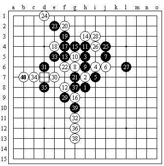

≮炫飞☆棋社≯第二届精英对抗赛部分比赛谱集
首页
≮炫飞☆棋社≯
#1 ≮炫飞☆棋社≯第二届精英对抗赛部分比赛谱集 作者：炫飞冰弦 发表时间：2009-2-26 0:59:05
白痴(黑) VS 潇洒(白)―48手白胜
菜农(黑) VS 流逝(白)―80手黑超时负
虫子(黑) VS YO(白)―63手黑胜
龙儿(黑) VS 清缘(白)―40手白抓

莫(黑) VS 小刀(白)―59手和
帅(黑) VS 雨(白)―54手白胜
罔两(黑) VS 风尘(白)―47手黑胜
白痴(黑) VS 猪头(白)―38手白胜

帅 VS 清缘―66手言和

云依(黑) VS YO(白)―69手黑胜
莫(黑) VS 雨(白)―62手白胜

更多比赛棋谱―详见≮炫飞☆总社≯群共享。
［ 逆刃 于 2009-2-26 19:39:03 时奖励此帖[金币加 20 威望加1］
#2 Re:≮炫飞☆棋社≯第二届精英对抗赛部分比赛谱集 作者：小丸.net 发表时间：2009-2-26 10:39:37
我最喜欢棋谱了，姐姐，能不能给打个包，
#3 Re:≮炫飞☆棋社≯第二届精英对抗赛部分比赛谱集 作者：失落刀 发表时间：2009-2-26 16:47:45
直接上传到这里吧。我也想要。
#4 Re:≮炫飞☆棋社≯第二届精英对抗赛部分比赛谱集 作者：不知 发表时间：2009-2-27 8:11:59
 我想要/QQ396531355
我想要/QQ396531355
#5 Re:≮炫飞☆棋社≯第二届精英对抗赛部分比赛谱集 作者：dyccj 发表时间：2009-2-28 12:49:15
偶也想要，可以吗393883276
#6 Re:≮炫飞☆棋社≯第二届精英对抗赛部分比赛谱集 作者：炫飞冰弦 发表时间：2009-2-28 16:09:24

 不客气 失落刀
不客气 失落刀
#7 Re:≮炫飞☆棋社≯第二届精英对抗赛部分比赛谱集 作者：gerbo 发表时间：2011-1-13 23:38:24
第一盘黑29走E8可以杀，不过要算清楚非常非常复杂。。
 qu~~.rar
qu~~.rar［此帖子已被 gerbo 在 2011-1-13 23:40:12 编辑过］